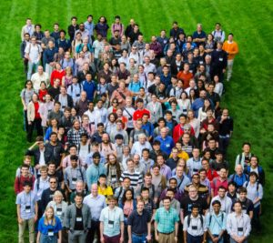

TQC 2021
TQC 2021 will take place in Riga, Latvia from July 5-8. For more information, see:
![[png]](wp-content/uploads/2021/01/TQC-2021-poster-1.png){kind=link}

TQC 2019
The conference talks are available on the QuICS Youtube Channel
Proceedings for TQC 2019 are now available here.
Find the agenda for the industry session is here.
Download the talk schedule for TQC here and for NISQ here.
Find the list of Posters for TQC 2019 here.
Find the list of Posters for NISQ here.
Registrations and Submission servers for TQC 2019 + NISQ are now closed.
14th Conference on the Theory of Quantum Computation, Communication and Cryptography
The Theory of Quantum Computation, Communication and Cryptography (TQC) is a leading annual international conference for students and researchers working in the theoretical aspects of quantum information science. The scientific objective is to bring together the theoretical quantum information science community to present and discuss the latest advances in the field.
TQC 2019 will be held from June 3-5, 2019 at the University of Maryland, College Park, Maryland, USA. The conference will feature invited and contributed talks and a poster session. It is the fourteenth in a series that started in Atsugi, Japan in 2006 and was last held in Sydney, Australia in 2018.

Workshop on Noisy Intermediate-Scale Quantum Technologies
This year, the conference will be followed by a two-day workshop on Noisy Intermediate-Scale Quantum (NISQ) Technologies. The workshop will bring together top experts on the subject of near-term quantum computation and provide a platform for the wider research community to engage in discussions about the near-term applications of quantum computers.
NISQ will be held from June 6-7, 2019 at the University of Maryland and will feature invited speakers and a poster session.

For sponsorship or general inquiries, contact galagic@umd.edu
Sponsors
Platinum Sponsors
Gold Sponsors
Silver Sponsors